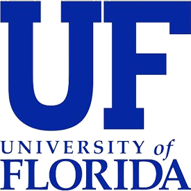

Experience

Public Relations & Events Assistant
Worked directly with professionals of the New Student and Family Programs area of the Dean of Students Office to assist in transitioing new students and their family members tpo the University of Florida. Created content, graphics and layouts for monthly newsletters using Constant Contact with an average reach of 15,000 recipients. Aid families and students with questions, orientation, registration, first-year experience, and relevant applications. Coordinate semesterly family weekend for student body for student body of 50,000.

Digital Marketing Assistant
Worked directly with professionals of the New Student and Family Programs area of the Dean of Students Office to assist in transitioing new students and their family members tpo the University of Florida. Created content, graphics and layouts for monthly newsletters using Constant Contact with an average reach of 15,000 recipients. Aid families and students with questions, orientation, registration, first-year experience, and relevant applications. Coordinate semesterly family weekend for student body for student body of 50,000.
Summer Associate
Worked directly with professionals of the New Student and Family Programs area of the Dean of Students Office to assist in transitioing new students and their family members tpo the University of Florida. Created content, graphics and layouts for monthly newsletters using Constant Contact with an average reach of 15,000 recipients. Aid families and students with questions, orientation, registration, first-year experience, and relevant applications. Coordinate semesterly family weekend for student body for student body of 50,000.
Public Relations Coordinator
Worked directly with professionals of the New Student and Family Programs area of the Dean of Students Office to assist in transitioing new students and their family members tpo the University of Florida. Created content, graphics and layouts for monthly newsletters using Constant Contact with an average reach of 15,000 recipients. Aid families and students with questions, orientation, registration, first-year experience, and relevant applications. Coordinate semesterly family weekend for student body for student body of 50,000.
Public Relations & Events Intern
Worked directly with professionals of the New Student and Family Programs area of the Dean of Students Office to assist in transitioing new students and their family members tpo the University of Florida. Created content, graphics and layouts for monthly newsletters using Constant Contact with an average reach of 15,000 recipients. Aid families and students with questions, orientation, registration, first-year experience, and relevant applications. Coordinate semesterly family weekend for student body for student body of 50,000.
Preview Staffer
Worked directly with professionals of the New Student and Family Programs area of the Dean of Students Office to assist in transitioing new students and their family members tpo the University of Florida. Created content, graphics and layouts for monthly newsletters using Constant Contact with an average reach of 15,000 recipients. Aid families and students with questions, orientation, registration, first-year experience, and relevant applications. Coordinate semesterly family weekend for student body for student body of 50,000.